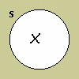
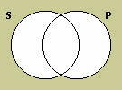
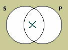

Philosophy Pages
| Dictionary | Study Guide | Logic | F A Q s | ||
|---|---|---|---|---|---|---|
| History | Timeline | Philosophers | Locke | |||
| Philosophy Pages
| Dictionary | Study Guide | Logic | F A Q s | ||
|---|---|---|---|---|---|---|
| History | Timeline | Philosophers | Locke | |||
If we expand the scope of our investigation to include shared terms and their complements, we can identify logical relationships of three additional varieties.
Since each of these new cases involves a pair of categorical propositions that are logically equivalent to each other—that is, either both of them are true or both are false—they enable us to draw an
immediate inference from the truth (or falsity) of either member of the pair to the truth (or falsity) the other.
The converse of any categorical proposition is the new categorical proposition that results from putting the predicate term of the original proposition in the subject place of the new proposition and the subject term of the original in the predicate place of the new. Thus, for example, the converse of "No dogs are felines" is "No felines are dogs," and the converse of "Some snakes are poisonous animals" is "Some poisonous animals are snakes."
Conversion grounds an immediate inference for both E and I propositions That is, the converse of any E or I proposition is true if and only if the original proposition was true. Thus, in each of the pairs noted as examples in the previous paragraph, either both propositions are true or both are false.
In addition, if we first perform a subalternation and then convert our result, then the truth of an A proposition may be said, in "conversion by limitation," to entail the truth of an I proposition with subject and predicate terms reversed: If "All singers are performers" then "Some performers are singers." But this will work only if there really is at least one singer.
Generally speaking, however, conversion doesn't hold for A and O propositions:
it is entirely possible for "All dogs are mammals" to be true while "All mammals are dogs" is false, for example, and for "Some females are not mothers" to be true while "Some mothers are not females" is false.
Thus, conversion does not warrant a reliable immediate inference with respect to A and O propositions.
In order to form the obverse of a categorical proposition, we replace the predicate term of the proposition with its complement and reverse the quality of the proposition, either from affirmative to negative or from negative to affirmative. Thus, for example, the obverse of "All ants are insects" is "No ants are non-insects"; the obverse of "No fish are mammals" is "All fish are non-mammals"; the obverse of "Some musicians are males" is "Some musicians are not non-males"; and the obverse of "Some cars are not sedans" is "Some cars are non-sedans."
Obversion is the only immediate inference that is valid for categorical propositions of every form.
In each of the instances cited above, the original proposition and its obverse must have exactly the same truth-value, whether it turns out to be true or false.
The contrapositive of any categorical proposition is the new categorical proposition that results from putting the complement of the predicate term of the original proposition in the subject place of the new proposition and the complement of the subject term of the original in the predicate place of the new. Thus, for example, the contrapositive of "All crows are birds" is "All non-birds are non-crows," and the contrapositive of "Some carnivores are not mammals" is "Some non-mammals are not non-carnivores."
Contraposition is a reliable immediate inference for both A and O propositions; that is, the contrapositive of any A or O proposition is true if and only if the original proposition was true. Thus, in each of the pairs in the paragraph above, both propositions have exactly the same truth-value.
In addition, if we form the contrapositive of our result after performing subalternation, then an E proposition, in "contraposition by limitation," entails the truth of a related O proposition: If "No bandits are biologists" then "Some non-biologists are not non-bandits," provided that there is at least one member of the class designated by "bandits."
In general, however, contraposition is not valid for E and I propositions:
"No birds are plants" and "No non-plants are non-birds" need not have the same truth-value, nor do "Some spiders are insects" and "Some non-insects are non-spiders."
Thus, contraposition does not hold as an immediate inference for E and I propositions.
Omitting the troublesome cases of conversion and contraposition "by limitation," then, there are exactly two reliable operations that can be performed on a categorical proposition of any form:
| A | proposition: | All S are P. | |
|---|---|---|---|
| Obverse | No S are non-P. | ||
| Contrapositive | All non-P are non-S. | ||
| E | proposition: | No S are P. | |
| Converse | No P are S. | ||
| Obverse | All S are non-P. | ||
| I | proposition: | Some S are P. | |
| Converse | Some P are S. | ||
| Obverse | Some S are not non-P. | ||
| O | proposition: | Some S are not P. | |
| Obverse | Some S are non-P. | ||
| Contrapositive | Some non-P are not non-S. | ||
It is time to express more explicitly an important qualification regarding the logical relationships among categorical propositions. You may have noticed that at several points in these two lessons we declared that there must be some things a certain kind. This special assumption, that the class designated by the subject term of a universal proposition has at least one member, is called existential import. Classical logicians typically presupposed that universal propositions do have existential import.
But modern logicians have pointed that the system of categorical logic is more useful if we deny the existential import of universal propositions while granting, of course, that particular propositions do presuppose the existence of at least one member of their subject classes. It is sometimes very handy, even for non-philosophers, to make a general statement about things that don't exist. A sign that reads, "All shoplifters are prosecuted to the full extent of the law," for example, is presumably intended to make sure that the class designated by its subject term remains entirely empty. In the remainder of our discussion of categorical logic, we will exclusively employ this modern interpretation of universal propositions.
Although it has many advantages, the denial of existential import does undermine the reliability of some of the truth-relations we've considered so far.
In the traditional square of opposition, only the contradictories survive intact;
the relationships of the contraries, the subcontraries, and subalternation no longer hold when we do not suppose that the classes designated by the subject terms of A and E propositions have members.
(And since conversion and contraposition "by limitation" derive from subalternation, they too must be forsworn.)
From now on, therefore, we will rely only upon the immediate inferences in the table at the end of the previous section of this lesson and suppose that A and O propositions and E and I propositions are genuinely contradictory.
The modern interepretation of categorical logic also permits a more convenient way of assessing the truth-conditions of categorical propositions, by drawing
Venn diagrams, topological representations of the logical relationships among the classes designated by categorical terms.
The basic idea is fairly straightforward:

Each categorical term is represented by a labelled circle.
The area inside the circle represents the extension of the categorical term, and the area outside the circle its complement.
Thus, members of the class designated by the categorical term would be located within the circle, and everything else in the world would be located outside it.

We indicate that there is at least one member of a specific class by placing an × inside the circle;
an × outside the circle would indicate that there is at least one member of the complementary class.

To show that there are no members of a specific class, we shade the entire area inside the circle; shading everything outside the circle would indicate that there are no members of the complementary class.
Notice that diagrams of these two sorts are incompatible: no area of a Venn diagram can both be shaded and contain an × ; either there is at least one member of the represented class, or there are none.

In order to represent a categorical proposition, we must draw two overlapping circles, creating four distinct areas corresponding to four kinds of things:
those that are members of the class designated by the subject term but not of that designated by the predicate term;
those that are members of both classes;
those that are members of the class designated by the predicate term but not of that designated by the subject term;
and those that are not members of either class.
Categorical propositions of each of the four varieties may then be diagrammed by shading or placing an × in the appropriate area:

The universal negative (E) proposition asserts that nothing is a member of both classes designated by its terms, so its diagram shades the area in which the two circles overlap.

The particular affirmative (I) proposition asserts that there is at least one thing that is a member of both classes, so its diagram places an × in the area where the two circles overlap.
Notice that the incompatibility of these two diagrams models the contradictory relationship between E and I propositions;
one of them must be true and the other false, since either there is at least one member that the two classes have in common or there are none.

The particular negative (O) proposition asserts that there is at least one thing that is a member of the class designated by its subject term but not of the class designated by its predicate term,
so its diagram places an × in the area inside the circle that represents the subject term but outside the circle that represents the predicate term.

Finally, the universal affirmative (A) proposition asserts that every member of the subject class is also a member of the predicate class.
Since this entails that there is nothing that is a member of the subject class that is not a member of the predicate class, an A proposition can be diagrammed by shading the area inside the subject circle but outside the predicate circle.
Again, the incompatibility of the diagrams for A and O propositions represents the fact that they are logically contradictory; one of them must be true and the other false.